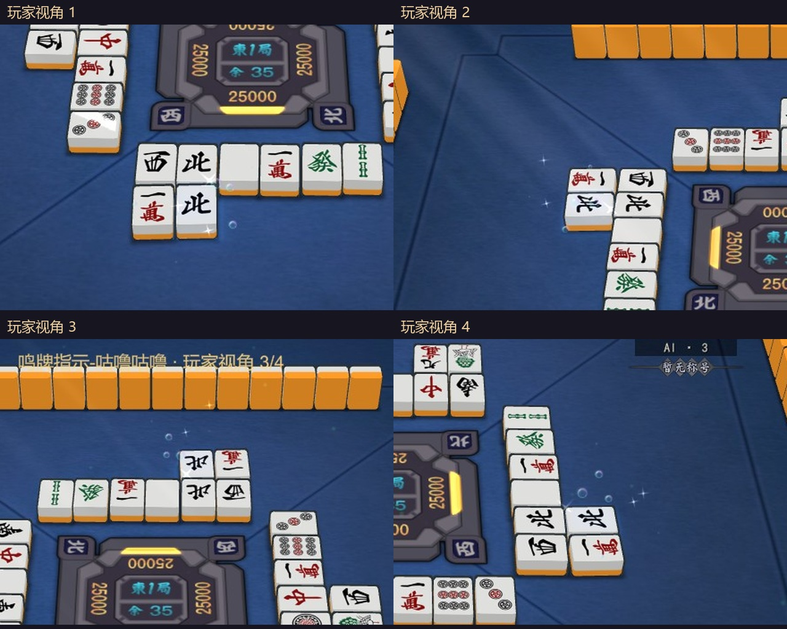
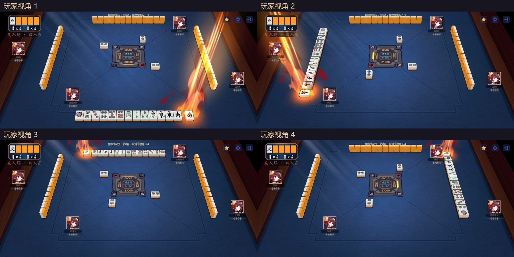
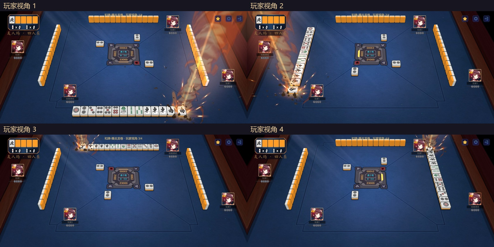
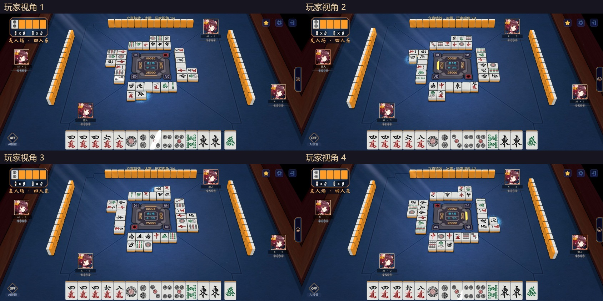

气泡方向修正 · 四个玩家视角
四种鸣牌指示：咕噜咕噜（气泡）、雷驰电掣、普通引导（新增）、众星捧月（新增）。另附烈焰、爆炎龙卷和冰霜的四视角。
同一事件从四个玩家位置观察，四宫格同步播放。可切换局部放大或单个视角；画面来自 Unity 编辑器实际运行。本轮没有生成新 APK。
0.0 / 3.2 秒
鸣牌指示-咕噜咕噜 · 四视角截图

鸣牌指示-雷驰电掣 · 四视角截图
鸣牌指示－普通引导 · 四视角截图
鸣牌指示-众星捧月 · 四视角截图
和牌特效－烈焰 · 四视角截图

和牌-爆炎龙卷 · 四视角截图

立直特效－冰霜 · 四视角截图

原分辨率单视角视频
鸣牌指示-咕噜咕噜： 视角 1 / 视角 2 / 视角 3 / 视角 4
鸣牌指示-雷驰电掣： 视角 1 / 视角 2 / 视角 3 / 视角 4
鸣牌指示－普通引导： 视角 1 / 视角 2 / 视角 3 / 视角 4
鸣牌指示-众星捧月： 视角 1 / 视角 2 / 视角 3 / 视角 4
和牌特效－烈焰： 视角 1 / 视角 2 / 视角 3 / 视角 4
和牌-爆炎龙卷： 视角 1 / 视角 2 / 视角 3 / 视角 4
立直特效－冰霜： 视角 1 / 视角 2 / 视角 3 / 视角 4